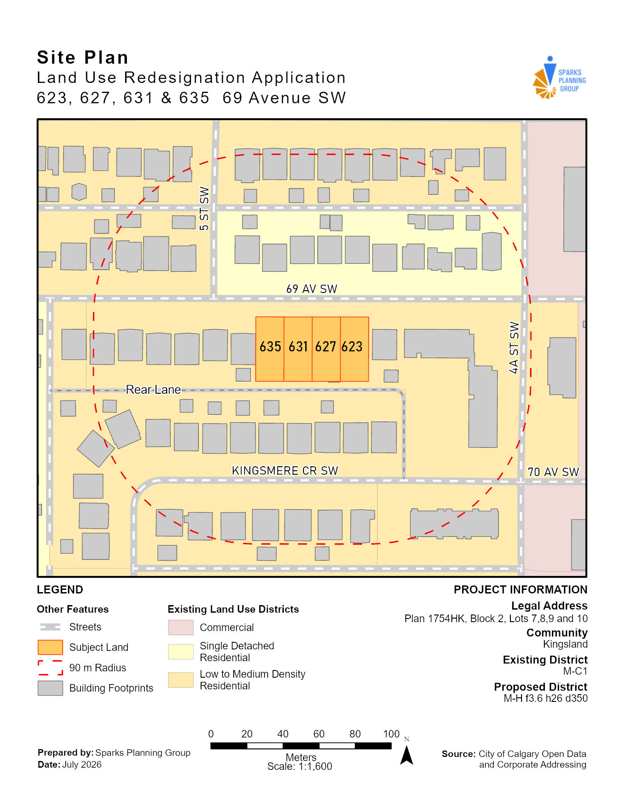
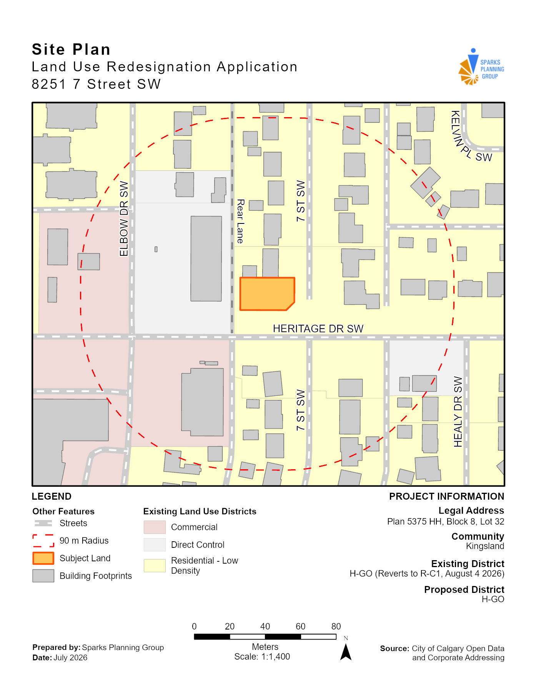
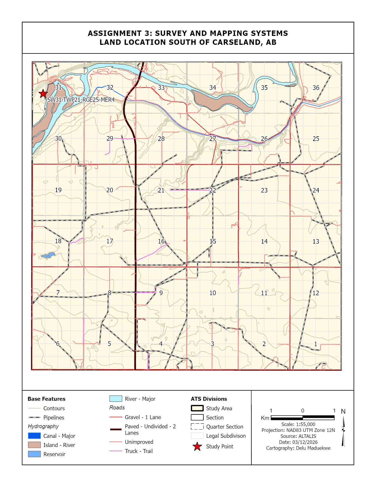
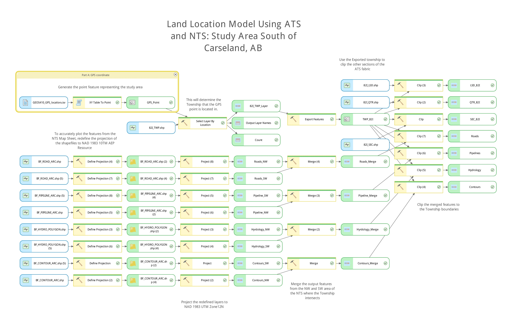

GEOSPATIAL PORTFOLIO · SEE LEGEND ABOVE
Delu Maduekwe
Bachelor of Applied Technology - Geographic Information Systems
Southern Alberta Institute of Technology, in progress
GIS professional with a background in geology and project coordination, focused on using spatial analysis, remote sensing, mapping, GIS automation and delivering web products to solve real-world problems.
I’m particularly interested in applying GIS within infrastructure, energy, and municipal work, where spatial data can support planning, asset management, environmental analysis, and better decision-making. My goal is to keep building strong technical skills while contributing to practical, collaborative projects with real impact.
- Currently
- Job hunting
- Core Tools
- ArcGIS Pro, AGOL, Python, SQL
- Based in
- Calgary, Alberta
Capstone · Complete
Highway to the Trigger Zone
The capstone project transformed 72.5 km² of complex terrain on Morrissey Ridge near Fernie, BC, into a reviewable set of 268 candidate avalanche trigger zones for future drone-based avalanche control. Using 1 m LiDAR, satellite imagery, and land-cover data, our team developed a six-factor AHP-weighted suitability model based on slope, aspect, elevation, ruggedness, plan curvature, and vegetation.
The workflow automated candidate-zone extraction and attached coordinates and terrain attributes to each site, while validation against existing avalanche terrain ratings helped assess the model’s performance. Results were published as web layers and interactive 2D/3D scenes to support treatment planning, site review, and potential drone flight routing.
Team: Delu Maduekwe, John Abboud, Teng Zhang
Client: Centre for Innovation and Research in Unmanned Systems (CIRUS)
Semester 1 Final Project · Complete
Calgary Livability Index
The Calgary Livability Index project used spatial analysis to compare community-level affordability, safety, accessibility, and access to amenities across the city. The analysis combined housing prices, park proximity, transit access, and a break-and-enter rate normalized by community population, while also examining the spatial distribution and significance of these variables.
The final index showed a clear spatial pattern, with higher livability scores generally clustering in central, western, and northwestern Calgary, while lower scores were more common in parts of the east and south. The project demonstrated how GIS can reveal broader urban patterns and support evidence-based municipal planning and decision-making.
Team: Delu Maduekwe, Teng Zhang, Apram Singh
ArcGIS StoryMaps Interactive Narrative
All Roads Lead to Anfield
Follow the story of Liverpool Football Club through geography, from its roots in the city of Liverpool to its place in English football, European success, and global identity. All Roads Lead to Anfield uses interactive maps, sidecars, map tours, and multimedia to explore iconic locations, rival clubs, European triumphs, and the origins of Liverpool players and legends
GEOS 457 Final Poster · Complete
Electricity access rate in Africa for 2023
A cartographic poster exploring electricity access across Africa in 2023 from several perspectives. The project compares national access rates, the total population without electricity, urban–rural differences, and state-level patterns in Nigeria to show how a single continental average can hide major regional differences. It combines choropleth maps, proportional symbols, pie charts, rankings, and supporting statistics to present the issue clearly across multiple geographic scales.
Cartographers: Delu Maduekwe, John Abboud
Maps & Visualizations
California Road Cycling Rates
An 11×17" map showing road cycling participation rates across California counties. Participation was normalized by adult population so counties could be compared more fairly, revealing clear regional differences across the state. The final layout combines a choropleth map, histogram legend, and a summary table to highlight counties with the highest and lowest participation rates while demonstrating data visualization and cartographic design for an irregularly shaped state.
GEOS 457 · Cartography · Chloropleth
Florida Seniors Total Population
A proportional symbol map of Florida showing the total number of seniors in each county and highlighting counties identified as statistical outliers. The map uses thematic mapping techniques to make population patterns and unusual values easier to see and understand.
GEOS 419 · Data Analysis and Output · Proportional Symbols


Land Use Redesignation Maps
Created a series of land use redesignation maps for Sparks Planning Group in Calgary, for sites in Kingsland community. The maps showed the subject parcels, surrounding land-use districts, nearby buildings, streets and lane access, and the required notification area to support planning applications and community context review.
The project focused on producing clear, professional planning maps combining cadastral, land-use, and municipal data into submission-ready layouts for real development proposals.
Freelance · Land Use Mapping · Real Estate Development


Automated ATS and NTS Land Location
Built an automated GIS workflow to identify ATS and NTS land locations from a GPS point and prepare supporting map data for the surrounding study area. Using ModelBuilder and Python, the workflow identified the legal land description, processed township and NTS datasets, standardized projections, and organized the final outputs into a geodatabase. The project demonstrated how automation can streamline land-location and map-preparation workflows commonly used in surveying, resource, and infrastructure projects.
GEOS456 · GIS Automation · Map Sheets · ATS
Interpolated Surface Model
Created an interpolated surface model from a set of elevation points using inverse distance weighting (IDW) in ArcGIS. The model was used to visualize terrain variations and support environmental impact assessments.
GEOS409 · Spatial Analysis · Interpolation
Toulouse Cycling Network Analysis
Built a Python/ArcPy geoprocessing workflow to analyze cycling networks across Toulouse, France. The script imported and projected multiple datasets, intersected cycling routes with commune boundaries, and calculated total network length by commune to identify the areas with the greatest cycling infrastructure.
The final output combined automated spatial processing with a three-map layout and summary table, demonstrating Python scripting, spatial overlay, data summarization, and cartographic presentation.
GEOS456 · Spatial Analysis · GIS Automation
[Map or project title]
[1–2 sentences on the method and dataset.]
[Tool] · [Technique] · [Course code, if any]
Web Apps & Dashboards
[App or dashboard title]
[1–2 sentences on what it does and who it's for.]
[Tool] · [Technique]


![[App name] screenshot](images/your-screenshot.jpg)
{kind=link}